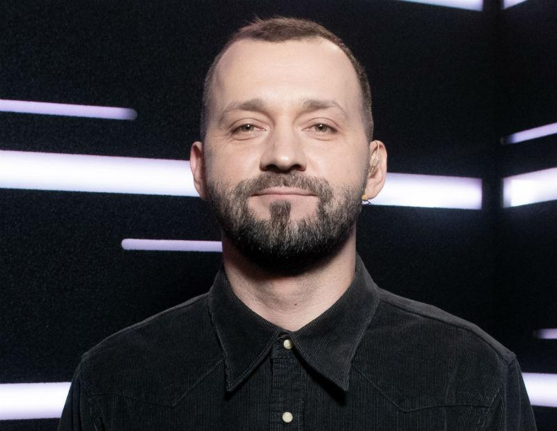
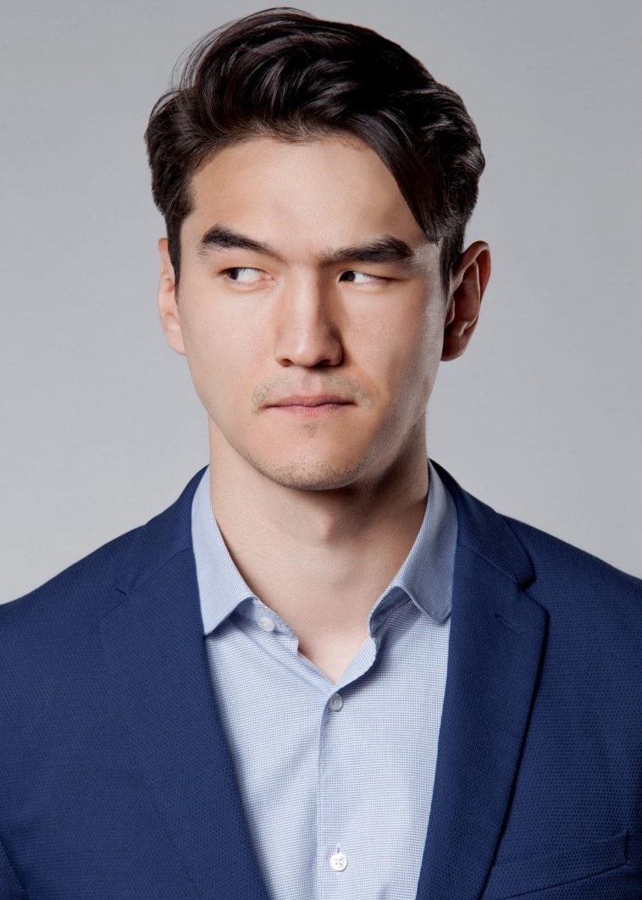
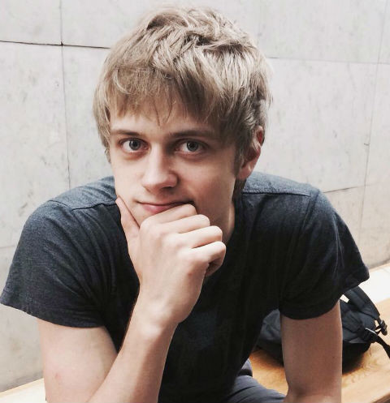
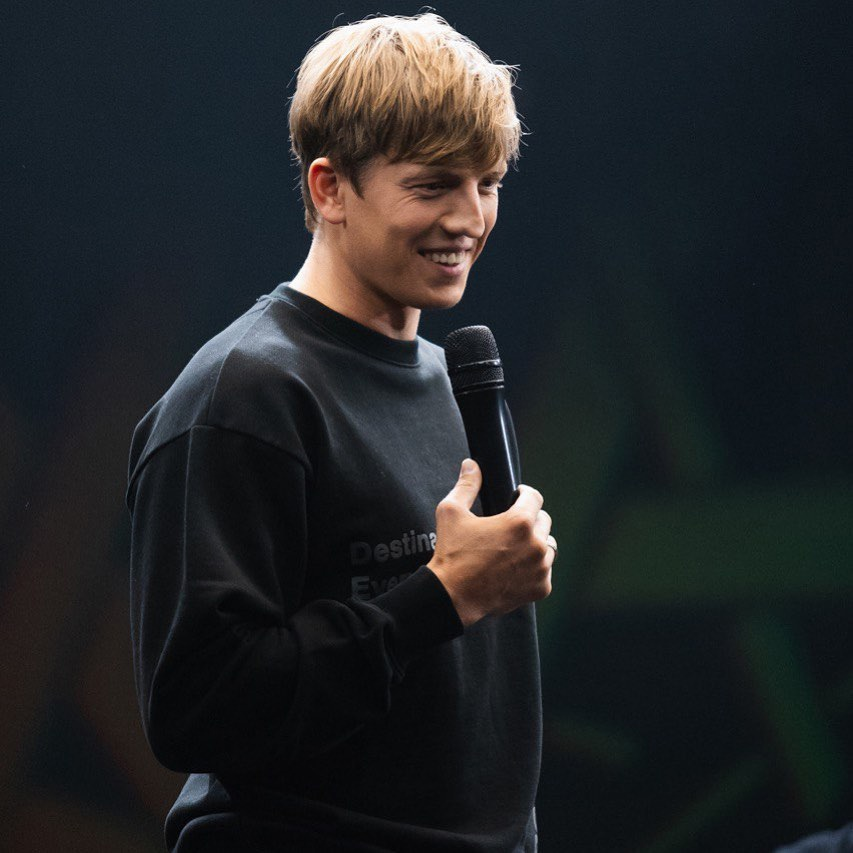
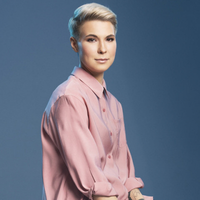
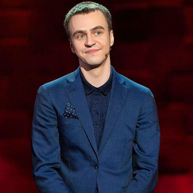
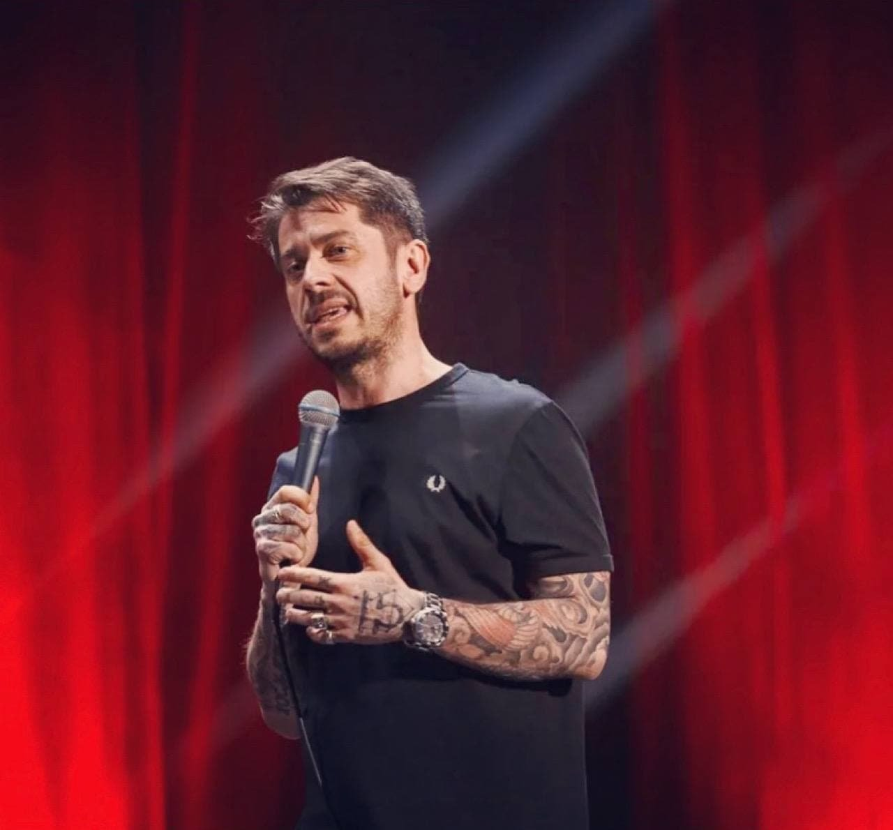
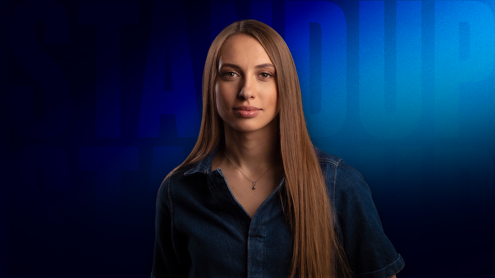
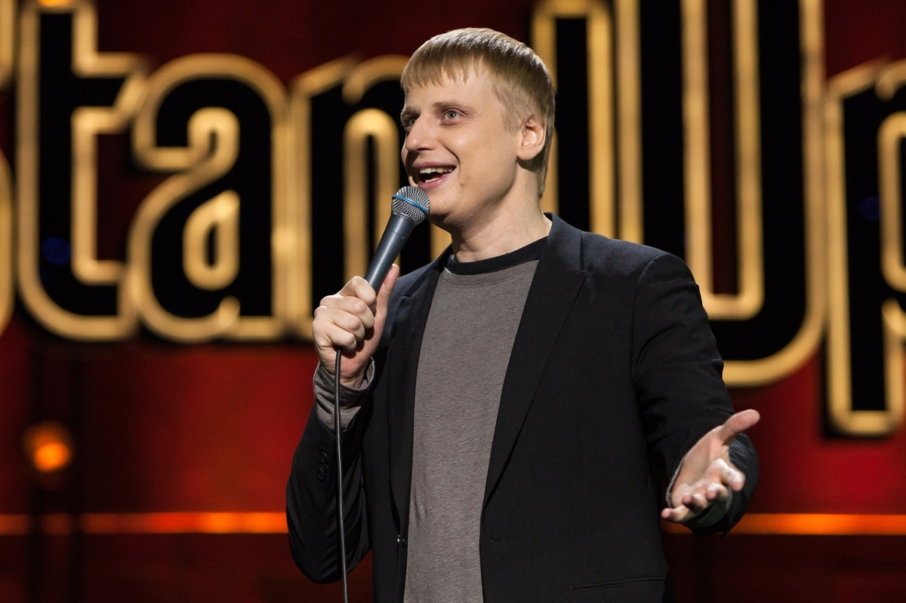

Home
History
Comedians
Watch
Site Plan
Eвгений Чебадков
Казахстанец по крови, Канадец в душе. Профессионально владеет всеми акцентами английского.

Руслан Белый
После 20 лет службы, бросил армию и начал заниматься стендапом. Отец русского стендапа. Основатель Stand Up на ТНТ.

Нурлан Сабуров
Самый самовлюбленный комик. Ведующий шоу "Что было дальше?"

Иван Усович
Молодой сердцеед. Красавчик из Беларуси. Знает всю грамматику русского языка.

Алексей Щербаков
Самый приземленные и честный стендап комик в России. Участник Кабеди Батл.

Зоя Яровицина
Замужем. Откровенно шутит про мужа, секс и отношения.

Иван Абрамов
При помощи музыки старается донести до публики более менее серьезные вещи, но с юмором, с веселой подачей.

Стас Старовойтов
Начинающий актер. Шутит про жизнь в браке, не шутит про чужое горе.

Виктория Складчикова
Шутит об отношениях с мужчинами, жизни в маргинальной семье и переезде в Москву.

Слава Комисаренко
Белорус. Добрейшей души человек. Поклонник Луис Си Кея. Знает все про отношения.
Гурам Амарян
Первый комик-езит. Вырос в Грузии. Шутит о расизме.